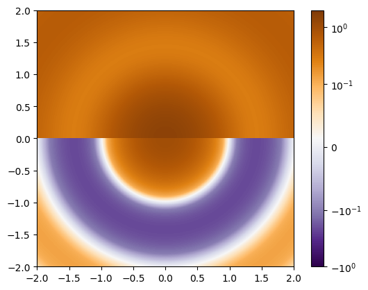
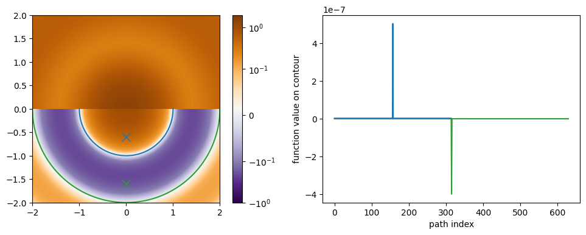

Example 2, discontinuous function
For our second example we will look at a discontinuous function with zero contours that terminate in end points. We will use jax.numpy.where to add in the discontinuity, as a result we need to make sure forward_mode_differentiation is specified when we use the value_and_grad_wrapper.
%load_ext autoreload
%autoreload 2
import jax
import jax.numpy as jnp
jax.config.update("jax_enable_x64", True)
import matplotlib.pyplot as plt
import matplotlib.colors as colors
from jax_zero_contour import (
zero_contour_finder,
value_and_grad_wrapper
)
def f(x, y):
# avoid r=0 so the grad is finite
r = jnp.sqrt(x**2 + y**2 + 1e-15)
theta = jnp.arctan2(y, x)
z = jnp.sinc(r)
return jnp.where(theta >= 0, z + 0.5, z)
n = 1024
x = jnp.linspace(-2, 2, n)
y = jnp.linspace(-2, 2, n)
X, Y = jnp.meshgrid(x, y)
z = f(X, Y)
plt.imshow(
z,
extent=(x.min(), x.max(), y.min(), y.max()),
norm=colors.SymLogNorm(linthresh=0.1, vmin=-1, vmax=2),
cmap='PuOr_r',
origin='lower',
interpolation='nearest'
)
plt.colorbar();

As expected, the zero contours are not closed loops in this case, but instead half circles.
v_and_g = value_and_grad_wrapper(f, forward_mode_differentiation=True)
init_guess_1 = jnp.array([0.0, -0.6])
path_1, values_1, stopping_conditions_1 = zero_contour_finder(
v_and_g,
init_guess_1,
delta=0.01
)
print(stopping_conditions_1)
[1 1]
init_guess_2 = jnp.array([0.0, -1.6])
path_2, values_2, stopping_conditions_2 = zero_contour_finder(
v_and_g,
init_guess_2,
delta=0.01
)
print(stopping_conditions_2)
[1 1]
In both cases the zero finder terminated with [1, 1] indicating that it found an end point in both directions.
plt.figure(figsize=(12, 4))
plt.subplot(121)
plt.imshow(
z,
extent=(x.min(), x.max(), y.min(), y.max()),
norm=colors.SymLogNorm(linthresh=0.1, vmin=-1, vmax=2),
cmap='PuOr_r',
origin='lower',
interpolation='nearest'
)
plt.colorbar()
plt.plot(*init_guess_1, 'x', ms=10, color='C0')
plt.plot(*path_1.T, color='C0')
plt.plot(*init_guess_2, 'x', ms=10, color='C2')
plt.plot(*path_2.T, color='C2')
plt.subplot(122)
plt.xlabel('path index')
plt.ylabel('function value on contour')
plt.plot(values_2, color='C2')
plt.plot(values_1, color='C0');

We can see that the contour end points are correctly identified in the face of a discontinuity in the function.